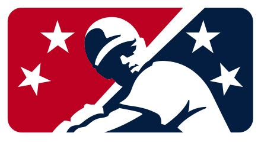

Baseball!
Minor League Baseball
The Minor Leagues (MiLB) is a generic term for the pro-am leagues. There are many different leagues around the country. However, after the COVID pandemic, the number of MLB-affiliated teams were reduced. Now there are only 120 MiLB teams, 4 for each of the 30 Major league team. The 4 levels are Triple-A (AAA), Double-A (AA), High-A (A+), and Single-A (A).
Besides those 4 affiliated leagues, there are other pro-am leagues around the country, such as the Pioneer League in Montana and some surrounding states. Many of those leagues were MLB-affiliated, but after COVID, they are now different independent leagues.